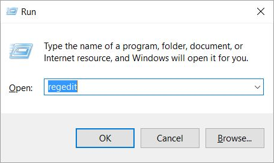
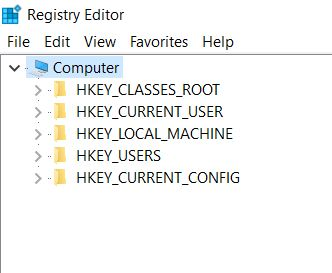
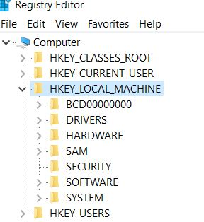
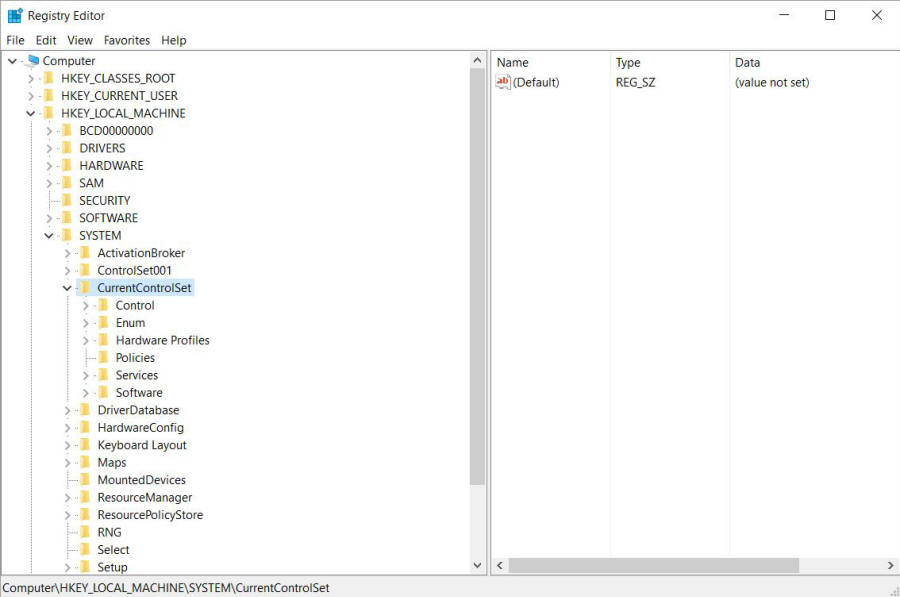
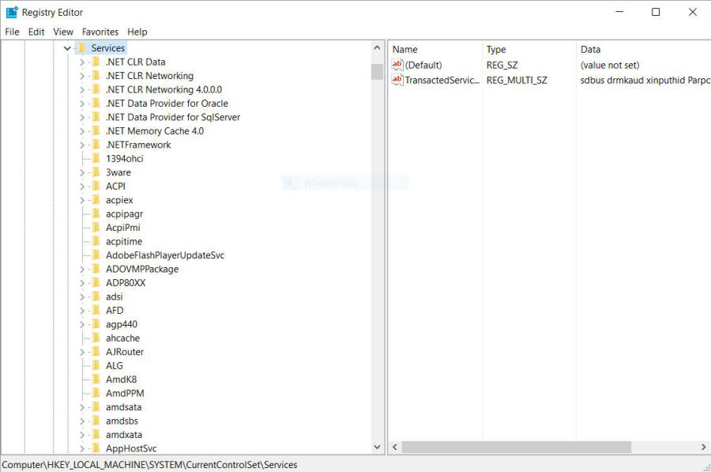
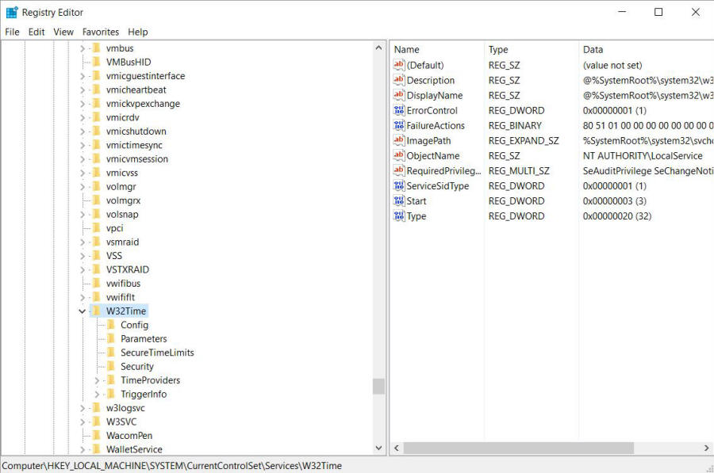
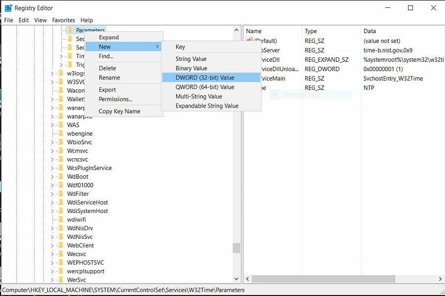
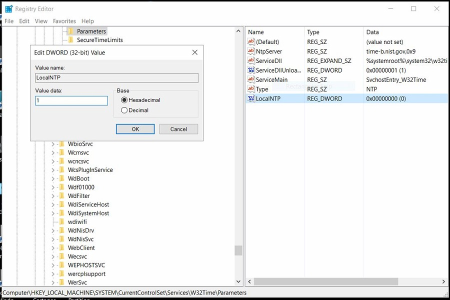
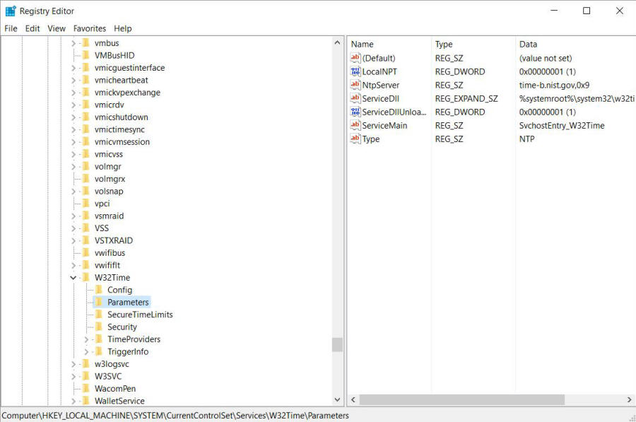

Image 4
| How to Edit Registry to enable NPT |
| Follow the below steps to manually registry the windows registry to allow for local Network tiem protocol. |
|
 Image 1 |
|
1. Open Registry Editor "regedit" The easiest way is to type
"Windows key" plus "R" at same time. then enter regedit in box and click open. |
|
 Image 2 |
|
2. Doubleclick on "HKEY_LOCAL_MACHINE" |
|
 Image 3 |
|
3. Doubleclick on "SYSTEM" |
|
Image 4 |
|
4. Doubleclick on "CurrentControlSet" |
|
 Image 5 |
|
6. Doubleclick on "Services" |
|
 Image 6 |
|
7. Scroll down to "W32Time" It will be close to the bottom
of the window. |
|
 Image 7 |
|
8. Doubleclick of 'W32Time" Under that is a "Parameters"
entry. See Image 8. You need to right click on that and in the box that pops up
select "New". Another selection will pop up. Select "DWORD
(32-bit) Value. Enter "LocalNPT" without the parenthesis in the space provided. If you can enter the value 1 in the Value data box do so. Sorry but I cannot capture all of the figures necessary to show this. |
|
 Image 8 |
|
Hilight the line LocalNTP Reg_DWORD 0x00000000 (0) and right click on it.
Select Modify. A box will pop up as shown in Image 9. Put a 1 in
the Value Data box and hit OK. |
|
 Image 9 |
| The Parameters entry should look Image 10 after you refresh the page. You can close the registry editor by hitting the X in upper right corner or under File and exit. |
|
 Image 10 |